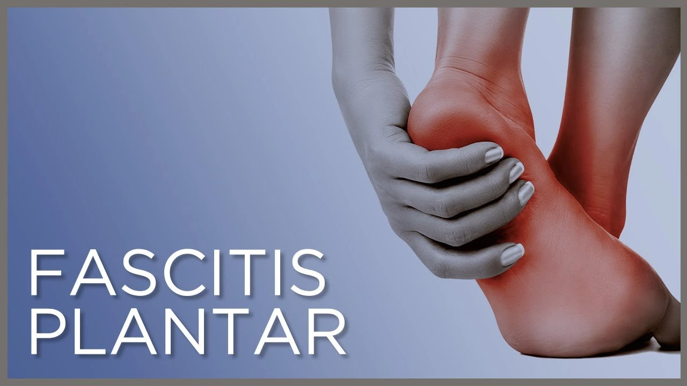
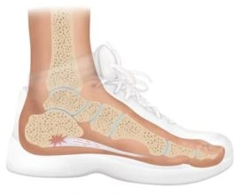

La fascitis plantar es una de las causas más comunes de dolor de talón. Implica la inflamación de una banda gruesa de tejido que atraviesa la planta del pie y conecta el hueso del talón con los dedos de los pies (fascia plantar).

La fascitis plantar comúnmente causa dolor punzante que suele aparecer con los primeros pasos en la mañana. A medida que te levantas y te mueves, el dolor normalmente disminuye, pero puede retornar después de largos períodos de estar de pie o cuando te pones de pie después de estar sentado.
La fascitis plantar es más común en los corredores. Las personas con sobrepeso y las que usan zapatos con soporte inadecuado también tienen un mayor riesgo de padecer fascitis plantar.
La fascitis plantar se diagnostica con base en los antecedentes médicos y el examen físico. Durante el examen en Podología Arlanzón, el podólogo revisará si hay áreas de sensibilidad en el pie. La ubicación del dolor puede ayudar a determinar su causa. Podremos sugerirte pruebas complementarias como por ejemplo una ecografía, radiografía o resonancia magnética para asegurarse de que otro problema, como una fractura por estrés, no te esté causando dolor.
La mayoría de las personas que tienen fascitis plantar se recupera en unos meses con un tratamiento conservador, que incluye reposo, aplicación de hielo en el área dolorosa y estiramiento. Es recomendable que una vez realizado el diagnóstico, el podólogo te recomiende pautas de tratamiento y te realice un estudio biomecánico y confeccionar plantillas personalizadas.
Los analgésicos pueden ser de gran ayuda en las primeras fases previas al uso de plantillas personalizadas.
Los ejercicios de estiramiento y fortalecimiento, o el uso de dispositivos especiales pueden aliviar los síntomas. Por ejemplo:

Si las medidas más conservadoras no están funcionando después de varios meses, nuestros podólogos podrán recomendarte lo siguiente: